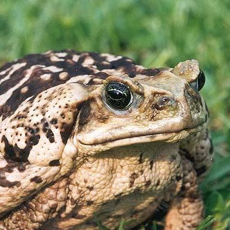

| Sapo Cururu | |
|  | |
| Gênero: | Rhinella |
| Principais características: | Pele rugosa e seca, patas dianteiras sem membrana interdigital (pé-de-pato), seus membros são de tamanhos parecidos e pula mais baixo do que seus familiares. Costuma hibernar por longos períodos em tocas enterradas no solo em tempos de seca. |
| Ameaça: | Quase todos são venenosos (possuem glândula parotóide atrás dos olhos) mas não representam perigo direto aos seres humanos |
O que fazer se um sapo entrar na minha casa?
A maioria dos sapos que aparecem em casa são sinantrópicos, ou seja, são acostumados a viver em ambientações humanas, por isso é comum na primavera que os sapos procurem refúgio em ambientes domésticos. Caso encontre sapos, rãs e pererecas em sua residência, não tenha medo, eles quase sempre estão de passagem e buscarão manter distância dos seres humanos.
Com as mãos limpas, ou usando luvas, pegue o sapo pelas pernas cuidadosamente, para não machucar o animal: Assim, ele não fugirá de você e nem irá o ferir. Você também pode usar um pote de vidro limpo para capturar o sapo, é importante também que o pote tenha ventilação caso for deixar ele fechado por um tempo. Assim que possível, solte o bichinho em algum lugar seguro para que ele possa retornar à natureza.
Durante a captura, pode ocorrer de o sapo urinar em você, mas não tem problema, a urina é uma resposta ao medo e não é tóxica a seres humanos. Se isso acontecer, mantenha as mãos longe dos olhos e boca e lave com água e sabão.
O Sapo Cururu tem fama de um veneno mortal que em contato com os olhos causa cegueira. Isso tudo não passa de mito. O cururu possui sim veneno, mas ele se encontra em glândulas, que NÃO esguicham, e se encontram embaixo de sua cabeça, só liberando a toxina ao toque ou ao se sentir ameaçado.
No Brasil, são encontradas 3 especies de Sapo Cururu: Rhinella marina, encontrado ano norte do pais; o Rhinella diptycha, no nordeste; e o Rhinella icterica, que habita do Centro-oeste ao Sul do Brasil.
Rhinella Marina
Rhinella diptycha

Contatos:
+55 (66) 99983-5588
pedro.miranda.estudante@bag.ifmt.edu.br
dyovana.araujo.estudante@bag.ifmt.edu.br